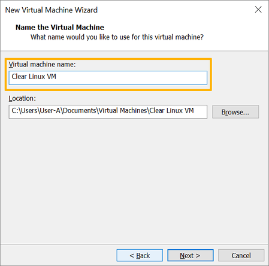

Run pre-configured Clear Linux* OS image as a VMware* Workstation Player guest OS
This page explains how to deploy a pre-configured Clear Linux OS VMware image on VMware Workstation 14 Player.
Overview
VMware Workstation 14 Player is a type 2 hypervisor. It runs on top of another operating system such as Windows* or Linux*. With VMware ESXi, you can create, configure, manage, and run Clear Linux* OS VMs on your local system.
注解
Screenshots in this document show VMware Workstation 14 Player for Windows. Menus and prompts in the Linux version have minor wording differences.
Install the VMware Workstation Player hypervisor
Enable Intel® VT and Intel® VT-d in your system’s BIOS.
VMware Workstation 14 Player is available for Windows and Linux. Download your preferred version.
Depending on which OS you’re running, install it by following one of these instructions:
On supported Linux distros:
Enable a GUI desktop.
Start a terminal emulator.
Start the installer by issuing the command below and following the guided steps.
sudo sh ./VMware-Player-[version number].x86_64.bundle
On Windows:
- Start the installer.
- Follow the setup wizard.
For additional help, see the VMware Workstation Player Documentation.
Download the latest Clear Linux OS VMware image
Get the latest Clear Linux OS VMware image from the image repository.
Look for clear-[version number]-vmware.vmdk.xz. You can also use
this command:
curl -O https://cdn.download.clearlinux.org/image/$(curl https://cdn.download.clearlinux.org/image/latest-images | grep vmware)
Visit Clear Linux* OS image types for additional information about all available Clear Linux OS images.
Verify the integrity of the Clear Linux OS image
Before you use a downloaded Clear Linux OS image, verify its integrity. This action eliminates the small chance of a corrupted image due to download issues. To support verification, each released Clear Linux OS image has a corresponding SHA512 checksum file designated with the suffix -SHA512SUMS.
Download the corresponding SHA512 checksum file of your Clear Linux OS image.
Start Command Prompt.
Go to the directory with the downloaded image and checksum files.
Get the SHA512 checksum of the image with the command:
CertUtil -hashfile ./clear-[version number]-[image type].[compression type] sha512
Manually compare the output with the original checksum value shown in the downloaded checksum file and make sure they match.
Decompress the Clear Linux OS image
Released Clear Linux OS images are compressed with either GNU zip (.gz) or XZ (.xz). The compression type depends on the target platform or environment. To decompress the image, follow these steps:
Download and install 7-Zip.
Go to the directory with the downloaded image and right-click it.
From the pop-up menu, select 7-Zip and select Extract Here as shown in Figure 1.

Figure 1: Windows 7-Zip extract file.
Image types
Table 1 lists the currently available images that are platform independent. Table 2 lists the currently available images that are platform specific.
| Image Type | Description |
|---|---|
| live-desktop.img or live-desktop.iso | Image for booting to GNOME* desktop to preview or install the OS. |
| live-server.img or live-server.iso | Image for booting to server command prompt to preview or install the OS. |
| Image Type | Description |
|---|---|
| aws.img | Image suitable for use with Amazon* AWS*. |
| azure.vhd | Virtual Hard Disk for use on Microsoft* Azure* cloud platform. |
| azure-docker.vhd | Virtual Hard Disk for use on Microsoft Azure cloud platform with Docker* pre-installed. |
| azure-machine-learning.vhd | Virtual Hard Disk for use on Microsoft Azure cloud platform with the machine-learning-basic bundle installed. |
| cloudguest.img | Image with generic cloud guest virtual machine (VM) requirements installed. |
| gce.tar | Image with the Google Compute Engine (GCE) specific kernel. |
| hyperv.vhdx | Virtual Hard Disk for use with Microsoft Hyper-V* hypervisor. Includes optimized kernel for Hyper-V. |
| kvm.img | Image for booting in a simple VM with start_qemu.sh. Includes optimized kernel for KVM. |
| kvm-legacy.img | Image for booting in a simple VM using legacy BIOS, if using start_qemu.sh make sure to remove -bios parameter. |
| pxe.tar | Image suitable for use with PXE server. |
| vmware.vmdk | Virtual Machine Disk for VMware* platforms inclduing Player, Workstation, and ESXi. |
We also provide instructions for other operating systems:
Create and configure a new VM
Start the VMware Workstation Player app.
On the home screen, click Create a New Virtual Machine. See figure 1.
On the Welcome to the New Virtual Machine Wizard screen, select the I will install the operating system later option. See figure 2.

Figure 2: VMware Workstation 14 Player - Select install operating system later.
Click the Next button.
On the Select a Guest Operating System screen, set the Guest operating system setting to Linux. See figure 3.

Figure 3: VMware Workstation 14 Player - Select guest operating system type
Set Version setting to Other Linux 3.x or later kernel 64-bit.
Click the Next button.
On the Name the Virtual Machine screen, give your new VM a name. See figure 4.
Figure 4: VMware Workstation 14 Player - Name virtual machine
Click the Next button.
On the Specify Disk Capacity screen, click the Next button. Keep the default disk settings unchanged. When we attach the pre-configured Clear Linux OS VMware image, we will remove the default virtual disk and replace it with the pre-configured one. See figure 5.
On the Ready to Create Virtual Machine screen, click the Customize Hardware… button. See figure 6.
Under the Device list, select Processors. See figure 7.
Under the Virtualization engine section, check Virtualize Intel VT-x/EPT or AMD-V/RVI.
To disconnect the virtual CD/DVD (IDE) since it is not needed, under the Device list, select New CD/DVD (IDE). See figure 8.

Figure 8: VMware Workstation 14 Player - Disconnect CD/DVD (IDE)
Under the Device status section, uncheck Connect at power on.
Click the Close button.
Click the Finish button.
{kind=link}
{kind=link}
{kind=link}
{kind=link}
{kind=link}
Attach the pre-configured Clear Linux OS VMware image
Move the downloaded and decompressed pre-configured Clear Linux OS VMware image file
clear-[version number]-basic.vmdkto the directory where your newly-created VM resides.注解
Depending on the OS, you can typically find the VMware VM files under:
- On Linux distros:
/home/username/vmware - On Windows:
C:UsersusernameDocumentsVirtual Machines
- On Linux distros:
On the VMware Workstation Player home screen, select your newly-created VM. See figure 9.

Figure 9: VMware Workstation 14 Player - Edit virtual machine settings
Click Edit virtual machine settings.
To remove the default hard disk, under the Device list, select Hard Disk (SCSI). See figure 10.
Click the Remove button.
To add a new hard disk and attach the pre-configured Clear Linux OS VMware image, click the Add… button. See Figure 11.

Figure 11: VMware Workstation 14 Player - Add new hard drive
Under the Hardware types section, select Hard Disk.
Click the Next button.
Select your preferred Virtual disk type. See figure 12.

Figure 12: VMware Workstation 14 Player - Select virtual disk type
Select the Use an existing virtual disk option. See figure 13.

Figure 13: VMware Workstation 14 Player - Use existing virtual disk
Click the Browse button and select the pre-configured Clear Linux OS VMware image file. See figure 14.

Figure 14: VMware Workstation 14 Player - Select ready-made VMware Clear Linux OS image file
Click the Finish button.
注解
When asked to convert the existing virtual disk to a newer format, selecting either option works.
{kind=link}
Enable UEFI boot support
Clear Linux OS needs UEFI support to boot. To enable it, add the
following line to the end of your VM’s .vmx file:
firmware = "efi"
注解
Depending on the OS, you can typically find the VMware VM files under:
- On Linux distros:
/home/username/vmware - On Windows:
C:\Users\username\Documents\Virtual Machines
Power on the VM
After configuring the settings above, power on your Clear Linux OS virtual machine.
On the VMware Workstation Player home screen, select your VM. See figure 15.
Click Play virtual machine.
{kind=link}